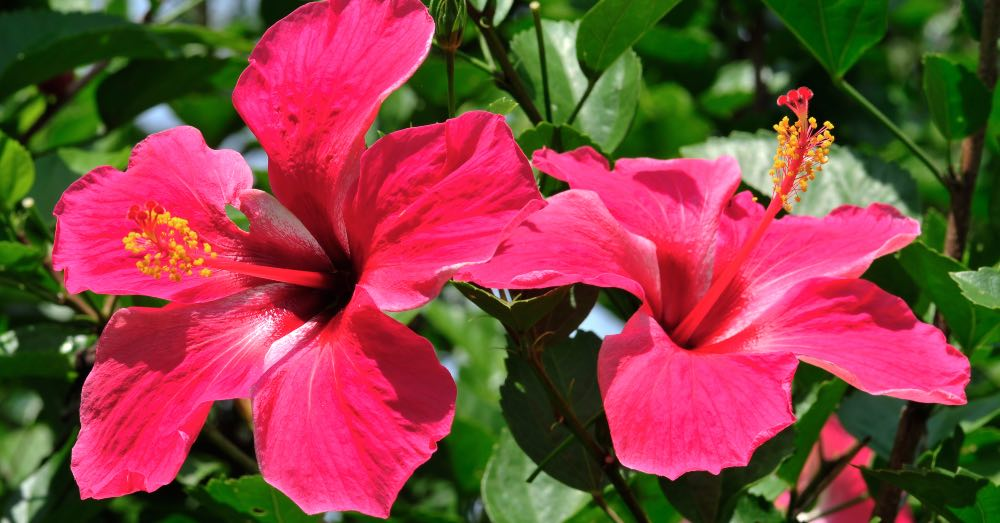

| ⋆˚✿˖°INICIO | ⋆˚✿˖°FLORES_DE_INVIERNO | ⋆˚✿˖°FLORES_DE_OTOÑO | ⋆˚✿˖°FLORES_DE_VERANO |
HIBISCO

Exuberante y tropical, el hibisco habla de la belleza efímera y el amor apasionado. Sus pétalos grandes y llamativos florecen con intensidad, aunque por poco tiempo, recordándonos que lo bello no necesita durar para ser inolvidable. En el verano, el hibisco representa el gozo de vivir el presente, la sensualidad de los días largos y cálidos, y la magia de lo que solo se da una vez.
BOUGAINVILLEA
Esta flor de papel, colorida y persistente, embellece muros y caminos como si quisiera pintar el mundo. La bugambilia representa la resiliencia, la creatividad y la alegría vibrante. Es la flor del alma viajera, del espíritu que transforma lo árido en belleza. En verano, nos recuerda que los lugares más cálidos también pueden florecer con intensidad y poesía.
MARGARITA
Sencilla y pura, la margarita es símbolo de la inocencia, la verdad y los nuevos comienzos. Florece bajo el sol como una sonrisa blanca con corazón dorado. En el verano, representa la frescura del amor sincero, la claridad en los sentimientos, y la belleza que no necesita adornos. Es la flor de los días simples pero inolvidables.
LIRIO
El lirio representa la pureza del alma, la renovación y el despertar interior. En verano, esta flor encarna también la majestuosidad serena, la pasión sutil y la nobleza del corazón. Es una flor que invita a florecer desde la calma, a mantener la dignidad en medio del calor de la vida, y a abrirse con confianza a lo que está por venir.